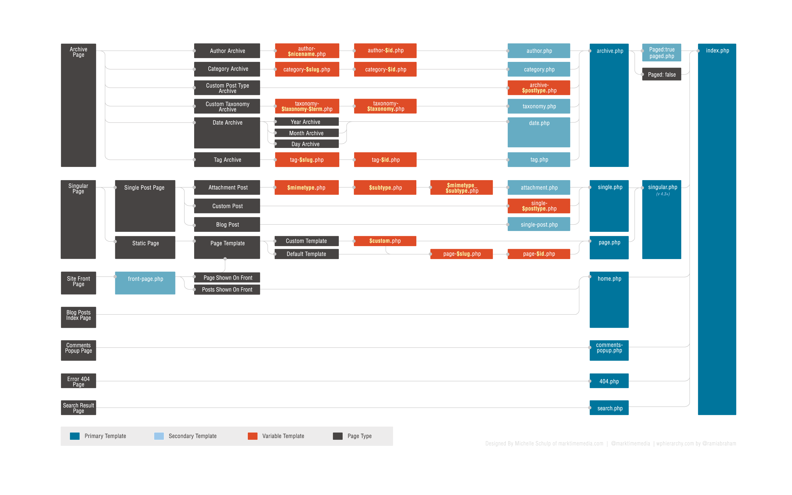

Never edit the WP core files; things can easily get broken and will be overwritten with any updates.
With just a few lines of code we can get up and running with a child theme.
WordPress looks for files in the child theme folder first, anything it can't find, it defaults back to the parent theme.
Child themes are a safe option because if you break anything it can be undone or deleted without effecting functionality of the site.
/*
Theme Name: Your theme name here
Theme URI: url for the theme, if you have one
Description: A description for your theme.
Author: Your name here
Author URI: Your website here
Template: folder name of parent theme (can find this by looking at wp-content folder)
Version: version number, start with 1 then goes up with points, i.e.1.1
*/
<?php
add_action( 'wp_enqueue_scripts', 'theme_enqueue_styles' );
function theme_enqueue_styles() {
wp_enqueue_style( 'parent-style', get_template_directory_uri() . '/style.css' );
wp_enqueue_style( 'child-style',
get_stylesheet_directory_uri() . '/style.css',
array('parent-style')
);
}
?>
A screen shot should be 880px by 660px and be named “screenshot.png”
Use your theme from last week or start fresh with one of the WordPress default themes, twentyfourteen, twentythirteen, etc.
Sometimes you might want to change other parts of a themes functionality, this can be done by copying the template files of the parent theme and overwriting in the child theme.
Modify the footer.php file and remove “Powered by WordPress”
<?php
/*
Template Name: *template name goes here*
*/
?>
<?php get_header(); ?>
<?php get_footer(); ?>
Side note: WP adds classes to your body tag; this can be used to style pages
Include tags execute the HTML & PHP found in another template
Functions defined for use in WordPress Themes
Copyright © <?php echo date('Y'); ?> <a href="<?php echo home_url( '/' ); ?>"><?php bloginfo( 'name' ); ?></a>
Displays content based on page and conditions it matches.
<?php
if(is_front_page()){
echo "<p>*This will only show up on the home page*</p>";
}
?>
<?php if (is_page() ) {?>
<div class='footer-page-only'>
<h1>*this will only show up on pages, not posts*</h1>
</div>
<?php } ?>
Let's use some template tags to customize our themes even more.
Use at least one include tag, one function tag and one conditional tag
This is how WordPress determines which files to use on individual pages
Child themes can also be created via a plugin which can be handy if you don't have ftp access.
Let's install a child theme plugin to see the difference.
Starter themes are not meant to be used like parent themes. The developers have created these themes so you can hack them and make it your own.
Download a starter theme of your choice (doesn't have to be one of the 3 mentioned) and update the screenshot along with some CSS.
After clicking on a tag link, a user is taken to a page listing those posts. There are many different ways to display these posts, controlled by the tag templates.
Used to create a custom search page.
Similarly to tags, you may want to display categories differently.